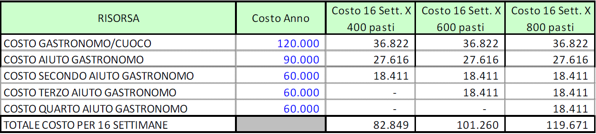
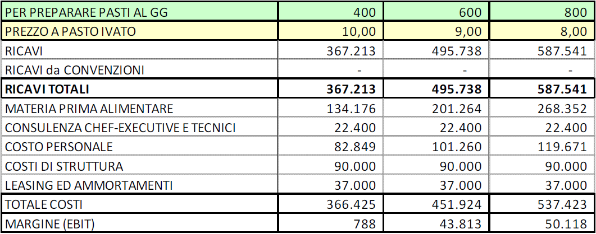
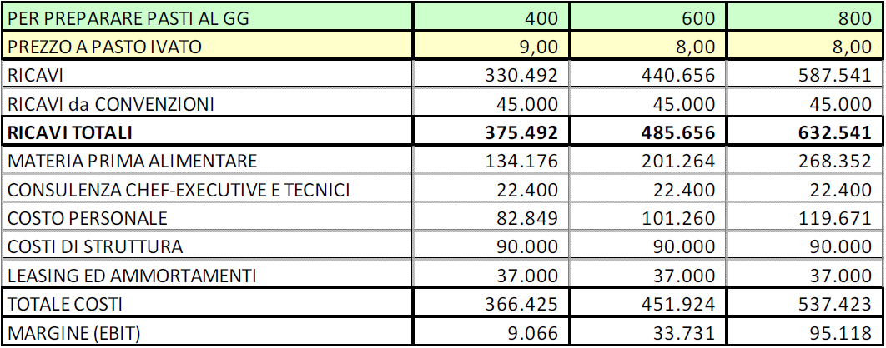

Bacheca · Articoli
Less Cooking
Questo è il quinto Concept di un Business Model che ho creato rilevandone l’unicità.
Mentre per i primi quattro non ho provveduto alla divulgazione per il loro forte interesse imprenditoriale e per la loro complessità che richiederebbe più un trattato che non un articolo, questo lo pubblico in quanto, avendo un apprezzabile contenuto sociale, ritengo sia utile divulgare l’idea affinché qualcuno la realizzi a beneficio delle signore: mamme, mogli o compagne che siano.
Infatti questo business model trae origine da due osservazioni ambientali, prodromiche ad una riflessione di marketing:
- In alcuni luoghi vacanze (mare o monti) il numero dei posti letto delle case vacanze (alloggi concessi in locazione temporanea) è di due o tre volte superiore ai residenti nonché supera di tre o quattro volte la ricettività alberghiera del sito;
- Vi sono famiglie con figli o coppie di amici che, per soggiornare in questi siti, preferiscono una sistemazione domestica anziché alberghiera: sia perché il costo giornaliero di un posto letto è inferiore all’equivalente in albergo (anche se non è corretto il confronto perché i servizi ricevuti non sono omogenei), sia perché lo spazio (in metri quadri) per ciascun ospite è più favorevole nell’alloggio in luogo della camera d’albergo.
La riflessione di marketing deriva dalla considerazione che le mogli, nell’opzione casa vacanze, sono private di parte delle vacanze perché barattano la cucina domestica con quella della villeggiatura che si sa è scarsamente attrezzata e diversamente disposta.
Il problema non è diurno, perché per pranzo sia al mare che ai monti (in spiaggia o in passeggiata) “ci si arrangia”, nasce la sera. Vero che tale disagio può essere superato con una cena al ristorante o in pizzeria, ma lo scontrino medio eleva il costo della villeggiatura, quindi non è pensabile come soluzione quotidiana.
È inequivocabile l’esistenza di un bisogno latente che può essere soddisfatto con un prodotto ad hoc: un pasto preconfezionato, da asporto, acquistabile al prezzo contenuto di otto o dieci euro.
Mi sono ispirato ad una località montana che ha una buona offerta di posti letto in case vacanza; ovviamente trattandosi di luogo di villeggiatura, l’attività sarebbe stagionale.
La valutazione dei periodi di apertura va da un minimo di quindici settimane per complessivi 105 giorni, ad un massimo di diciotto settimane per complessivi 126 giorni.
Si assume in questo caso una apertura di sedici settimane per complessivi 112 giorni che equivalgono ad un part-time del 30,68%.
Lo sviluppo del Progetto Less Cooking, passa per le seguenti linee guida: (i) qualità della materia prima alimentare; (ii) eccellenza delle risorse umane; (iii) Assets di ultima generazione, tecnologicamente molto avanzati; (iv) organizzazione della comunicazione digitale, mediante l’uso di apposite APP.
A seguire l’elenco delle risorse e dei fattori di produzione necessari.
Materia Prima Alimentare
Avendo esaminato diverse ricette (di uso domestico quotidiano) e moltiplicato le quantità per i prezzi all’ingrosso si desume una incidenza media di tre euro a pasto.
Chiaramente occorre stipulare una o più convenzioni con i fornitori (all’inizio del canale distributivo) per assicurarsi l’efficienza sulla materia prima, senza abdicare alla qualità.
Packaging
Dovrà essere studiato in modo che sia idoneo alla trasportabilità, alla conservazione in frigorifero, biodegradabile allo smaltimento. Il suo costo, stimato, è incluso, anche con la frazione di ammortamento dell’attività di ricerca, nel costo della materia prima (trattandosi di costo variabile).
Chef Executive
Ha l’incarico di progettare il menù giornaliero, composto di due o tre portate; il suo compito non è facile perché deve scegliere ricette che coniughino alimenti poveri ma di qualità, equilibrio di calorie, facilità di conservazione ed una preparazione che non sia labour intensive. Per la consulenza di questo servizio si suppone un costo di 1.400,00 euro a settimana.
Risorse Umane
Nella tabella che segue, gli operatori ai quali riconoscere un compenso elevato affinché siano bravi; per determinarne il costo si parte dalla supposizione di costo annuo riparametrato per la percentuale di part-time (30,68%); nella RAL si suppone che siano incluse le varie indennità tra cui anche lo straordinari forfetizzato. Ecco il costo presumibile:

Costi di struttura
Locali e spese accessorie, impiantistica, utenze, amministrative, nonché tutti i costi di struttura e le spese generali sono valutati in 90.000,00 euro annui.
Assets
Sono stimati, per cucina e negozio, in 175.000,00 euro; un leasing a cinque anni (20% di anticipo e 10% di riscatto) comporta un onere di rata più la quota di ripartizione del maxi-canone pari ad euro 34.000,00.
Inoltre si stima che l’APP per mantenere il contatto con la clientela, richieda un investimento di 15.000,00 euro ammortizzabile in cinque anni.
Funzionamento del Modello
Giornalmente lo chef executive progetta il menù (che cambia ogni giorno) e lo mette a disposizione in rete entro le ore 18.00 di un determinato giorno. Il cliente entro le 10.00 del giorno successivo, collegandosi con l’apposita APP (messa a disposizione gratuitamente), è in grado di prenotare uno o più pasti e di pagare il prezzo.
Alla chiusura delle ordinazioni (sicure in quanto già vendute) il sistema invia i quantitativi degli alimenti necessari, ai fornitori i quali devono essere in grado (in virtù di una convenzione sottoscritta) di consegnare la merce entro due ore dall’ordine (circa le 12.00).
La cucina deve produrre in sei ore i pasti prenotati, quindi a partire dalle 18.00, i pasti confezionati da asporto devono poter essere consegnati al cliente in negozio; con la medesima APP si controlla la correttezza della consegna.
La consegna a domicilio non viene effettuata, a meno che non sia organizzata da terze parti ovvero da imprese esterne alle quali può far ricorso il cliente. L’impresa che gestisce il Less Cooking consegna unicamente franco negozio.
I Pasti
Non devono subire altro processo che il condimento e/o il riscaldamento con apposti forni a micro onde, di cui deve essere dotato ogni appartamento.
Inoltre deve poter essere consumato senza far ricorso a stoviglie (fatta eccezione per le posate). Non dimentichiamoci che la finalità ultima è di sollevare la padrona di casa dagli affanni della cena.
Il Conto Economico – variante A
Il Conto Economico è previsto con una produzione di 400, 600, 800 pasti al giorno da collocare ad un prezzo decrescente. Non trattandosi di somministrazione lo scorporo dell’IVA è stato effettuato, tuzioristicamente, utilizzando l’aliquota del 22%.
Nella presente simulazione non è prevista alcuna convenzione con le proprietà immobiliari.

Il Conto Economico – variante B
Nel caso che segue si suppone che l’impresa stipuli una convenzione con i proprietari degli alloggi, per effetto della quale:
- Il proprietario degli alloggi riconosce un importo di 400,00 euro per i primi due alloggi e 500,00 euro se sono più di due; la stima dei Ricavi si basa sulla stipulazione di cento convenzioni con altrettanti proprietari, ad una media di 450,00 euro a proprietario.
- L’impresa riconosce agli inquilini “convenzionati” uno sconto di due euro (ridotto ad uno nel primo anno).
Tale soluzione costituisce un vantaggio per tutte e tre le parti.

Il suggerimento è di sviluppare il business nel primo anno e di portarlo a regime, quindi stipulare le convenzioni nel secondo anno, per poi abbracciare quanto esposto nel successivo capitolo.
Possibile Evoluzione Futura
Un utilizzo più intensivo delle APP dovrebbe consentire di progettare, giornalmente, tre menù, metterli a disposizione dei clienti abituali tramite l’APP, raccogliere le preferenze entro le 22.00 del giorno di pubblicazione, quindi proporre il menu che ha raccolto il maggior numero di preferenze ed accettare le prenotazioni entro le 10.00 del giorno successivo (come di solito).
Nell’evoluzione continua della propria attività l’impresa di Less Cooking potrebbe associare i proprietari ovvero gli alloggi (non è in questa sede che si decide la forma giuridica ed il legale economico) per curarne comunicazione, vendita, gestione (anche tramite un apposito sito web), avendo cura anche che sia fissato uno standard minimo di arredo, attrezzatura, biancheria, stoviglie, domotica funzionante tramite APP, pulizia, estetica, serietà, uniformità di costo e di servizi resi in modo da creare un brand che continuamente si rafforzi: insomma si creerebbe una vasta organizzazione di Ospitalità Diffusa.
L’impresa di Less Cooking potrebbe stimolare la nascita di una cooperativa che oltre alla attività (peraltro modesta) di consegna dei pasti (su richiesta del cliente) potrebbe istituire altri servizi e attività, in favore dei clienti che soggiornano in alloggi convenzionati, quali ad esempio:
- Assistenza all’arrivo per l’accesso nell’alloggio (che è automatico a mezzo password su serratura elettrica) nel caso di difficoltà del cliente;
- Assistenza alla partenza, con rilascio dell’alloggio e conseguente pulizia;
- Cambio biancheria settimanale e lavaggio presso lavanderia;
- Ritiro capi abbigliamento personali per il trasferimento in lavanderia e successiva restituzione;
- Commissioni e ritiro spesa con consegna a domicilio;
- Attività di intrattenimento e/o custodia bambini e ragazzi;
- Attività di pet sitting;
- Attività di pulizia straordinaria dell’alloggio.
A queste attività se ne possono aggiungere altre; tutte le attività sono ordinate a mezzo APP e devono essere prepagate alla cooperativa, anticipatamente, se ne è accettata l’esecuzione.
Marco SAVIO – SINTESIX